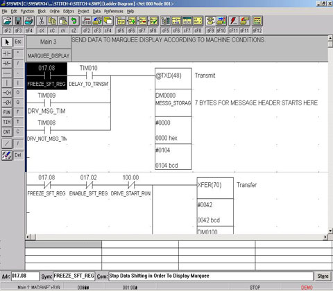
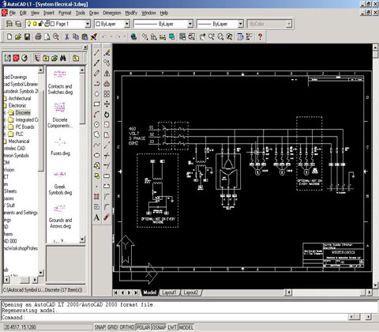
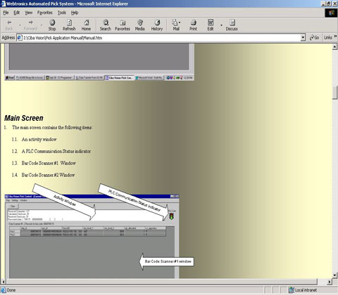

Press and related controls
Webtronics Automation provides electrical control systems for presses, auxiliaries and bindery systems.
Design and Build
We design and build control panels and consoles for press installations or for retrofit to existing installations. We program PLC controls, user interfaces and motor drives. Webtronics Automation also reprograms existing systems to accommodate changes to press or auxiliaries.
Software and Hardware
We have experience with “shaftless” operation of press units and auxiliaries, most notably using Indramat hardware and software. Our press and bindery systems are built around Allen-Bradley, Omron or Eurotherm hardware. Our user interfaces are based on CITECT, Rockwell Automation’s RSView or custom coded Visual Basic applications.

Documentation
Webtronics Automation supplies complete electrical schematics in AutoCAD format. User manuals are supplied in MS Word format or as HTML documents that can be made accessible to users on you company intranet.

